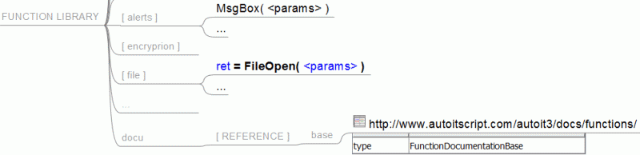
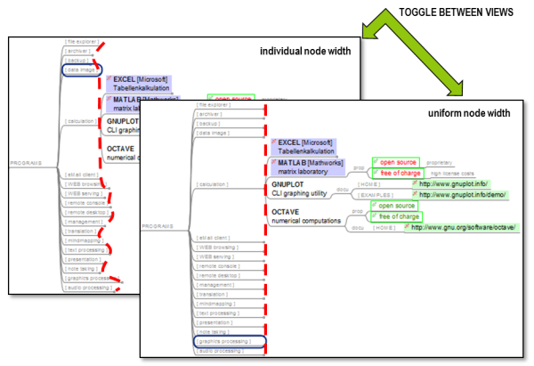

- A node with the last modification date of the map
- Add up attribute values of subnodes.
- Copy link of a node to the clipboard
- Sort child nodes alphabetically, by length or by other properties
- Sort attributes by name
- Sort attributes by value
- Set up a logger
- Import the structure of a LaTeX document as a mind map
- Export to BibTeX
- Export Node children as table for latex import
- Output A Map to CSV
- Output A Map to CSV Part 2
- Daves massivly cheezy Api Generator
- Simple bookmark implementation using scripts
- Create a map with Firefox bookmarks
- Find all connected nodes
- Find changed nodes
- Pomodoro Timer
- Kill Empty Nodes
- Create a Today GTD simple framework
- The Freeplane Task Time Tracker
- Using map specific storage
- Resize all external images
- Register a Markdown IContentTransformer
- Base64-encoded image
- Check for broken links
- Monitor Clipboard
- Copying files to sync directory
- Save Nodes of Style X to Text Files
- Remove Node and Log its Text in Parent Note
- Set the color for all children
- Insert Link to a node in another map
- Inline linked maps into one single map
- Play sound
- class FreeplaneWindow
- extract text contents from a node as part of a HTTP request
- construct a valid URI to be understood from a browser
- display the corresponding web page in an external browser
The first version of this Scripting article mainly consists/consisted of a port of the FreeMind script collection. Some of those scripts got a general rewrite; - especially those that were marked buggy or even broken. But I took the freedom to improve every script where it made sense. With one exception ("Sum up all subnodes...", a very long script) I have ported all scripts from the FreeMind page, regardless of how useful I found them since I believe that you will be able to learn from all of them.
Unfortunately scripts might get old over time, i.e. when scripting idioms evolve over time old scripts should be upgraded. If you find such scripts do a post in the forum.
- Scripts for text editing have been hived off to a separate page
- Scripts that use external libraries have their separate page, too.
- Scripts that might need a review before they are added here can be found in the Script incubator.
For larger scripts there is a special git repository [https://github.com/freeplane/addons].
A node with the last modification date of the map
This script sets the text of the status bar to the last modification timestamp of the whole map. format() is a free method of the Groovy script base class FreeplaneScriptBaseClass.
// @ExecutionModes({ON_SELECTED_NODE})
// find all nodes, collect their lastModifiedAt date and get the latest
def lastModifiedAt = c.findAll().collect{ it.lastModifiedAt }.max()
c.statusInfo = "The map was last modified at: " + format(lastModifiedAt, "yyyy-MM-dd hh:mm:ss")
Author: Boercher
Add up attribute values of subnodes.
This script adds up the "AMOUNT" attributes of all child nodes of a node and sets the "SUM" attribute of the selected node to the sum. The start value ensures that the argument is created always, even if the node has no children. Note that node[] returns a Convertible.
def startValue = node['AMOUNT'].to.num0
node['SUM'] = node.children.sum(startValue){ it['AMOUNT'].to.num0 }
// @ExecutionModes({ON_SELECTED_NODE})
To set a special formatting use the format() method again:
def sum = node.children.sum(0){ it['AMOUNT'].to.num0 }
node['SUM'] = format(sum, '0.0')
// @ExecutionModes({ON_SELECTED_NODE})
The following script does the same for the whole map.
c.findAllDepthFirst() iterates the map in the right order, starting from the leaf nodes. Uncomment the lines containing "index".
You should study how to use Groovy Collections methods like collect(), each(), sum() since this is one of most important topics for scripting beginners.
//int index = 1
c.findAllDepthFirst().each { n ->
def sum
if (n.isLeaf()) {
sum = n['AMOUNT'].to.num0
} else {
def startValue = n['AMOUNT'].to.num0
sum = n.children.sum(startValue){ it['SUM'].to.num0 }
}
n['SUM'] = format(sum, '0.0')
//n['index'] = index++
}
// @ExecutionModes({ON_SELECTED_NODE})
Original author: yubrshen, general rewrite by Boercher for Freeplane
Copy link of a node to the clipboard
Copies the hyperlink of a node to the clipboard. Print message to the status bar if the node contains no link.
// @ExecutionModes({ON_SINGLE_NODE})
def link = node.link.text
if (link)
textUtils.copyToClipboard(node.link.text)
else
c.statusInfo = "no link in ${node.text}"
Author: Boercher
Sort child nodes alphabetically, by length or by other properties
def sorted = new ArrayList(node.children).sort{ it.text }
sorted.eachWithIndex { it, i ->
it.moveTo(node, i)
}
// @ExecutionModes({ON_SELECTED_NODE, ON_SELECTED_NODE_RECURSIVELY})
To sort
- by length: Change "it.text" to "it.text.length()".
- by last modification date: Change "it.text" to "it.lastModifiedAt".
- by creation date: Change "it.text" to "it.createdAt".
- by the numeric value of an attribute "some_attrib": Change "it.text" to "it['some_attrib'].num0"
You can use every node attribute that is sortable - numbers, strings, ...
To reverse either of these sorts: Replace "sorted.eachWithIndex" by "sorted.reverse().eachWithIndex"
Author: Boercher
Sort attributes by name
The following script may be adjusted by changing the variable caseInsensitive or the body of the comparator.
Note that everything would be easier if attribute names were unique. Then we could use node.attributes.map. But if an attribute name appears more than once the map has less entries than the node has attributes.
Note how we define comparator as a block of code (a "Closure").
// @ExecutionModes({ON_SELECTED_NODE})
def caseInsensitive = true
def comparator = {
def string = it[0]
if (caseInsensitive)
string.toLowerCase()
else
string
}
def nodeAttributes = node.attributes
// save original attributes
def attribs = []
nodeAttributes.names.eachWithIndex { name, i ->
attribs.add([name, nodeAttributes.get(i)])
}
// replace attributes
nodeAttributes.clear()
attribs.sort(comparator).each { k, v ->
nodeAttributes.add(k, v)
}
Sort attributes by value
The following script is similar and may also be adjusted by changing the variable caseInsensitive or the body of the comparator.
// @ExecutionModes({ON_SELECTED_NODE})
def caseInsensitive = true
def comparator = {
def string = it[1] == null ? '' : it[1].toString()
if (caseInsensitive)
string.toLowerCase()
else
string
}
def nodeAttributes = node.attributes
// save original attributes
def attribs = []
nodeAttributes.names.eachWithIndex { name, i ->
attribs.add([name, nodeAttributes.get(i)])
}
// replace attributes
nodeAttributes.clear()
attribs.sort(comparator).each { k, v ->
nodeAttributes.add(k, v)
}
Author: Boercher
Set up a logger
The following code makes use of the application logger which logs to the standard Freeplane logfile. (Note: no import, no static access):
logger.info("Hello world!");
Import the structure of a LaTeX document as a mind map
Resulted from discussion in this forum discussion.
Note: This script is not tested - please review it and remove this note if it works.
Author: Cyril Crassin, adapted for Freeplane by Boercher
import javax.swing.JFileChooser
import org.freeplane.plugin.script.proxy.Proxy
/**
* @author Cyril Crassin
* adapted from http://www.icare3d.org/Blogger/Files/FreeMindLatexImportScript.groovy
* by Volker Boerchers
*/
JFileChooser chooser = new JFileChooser('.')
chooser.showOpenDialog()
File file = chooser.getSelectedFile()
if ( ! file)
return
def sectionhierarchy = [
"\\part",
"\\chapter",
"\\section",
"\\subsection",
"\\subsubsection",
"\\paragraph",
"\\subparagraph"
]
Proxy.Node prevNode = node.mindMap.root
prevLevel = 0
String curNoteText = ""
String lastNoteTextAdd = ""
prevNode.text = "PhDThesis"
file.eachLine{
secFound = false
for (i = 0; i<sectionhierarchy.size(); i++) {
if (it.contains(sectionhierarchy[i])) {
//Flush text
if (curNoteText.length() > 0) {
//curNoteText = curNoteText+lastNoteTextAdd
curNoteText = curNoteText+"</body>\n</html>"
prevNode.text = curNoteText
//c.setXmlNoteText(prevNode, curNoteText)
}
lastNoteTextAdd = ""
curNoteText = ""
//Deal with new node
openAcc = it.indexOf('{')
closeAcc = it.indexOf('}')
curLevel = i
sectionName = it.substring(openAcc+1, closeAcc)
while (prevLevel>=curLevel && prevNode != node.mindMap.root) {
prevNode = prevNode.parent
prevLevel--
}
def newNode = prevNode.createChild(sectionName)
prevNode = newNode
prevLevel = curLevel
secFound = true
break
}
}
if (!secFound){
if (it.length() > 0 || curNoteText.length() > 0 || lastNoteTextAdd.length() > 0){
if (curNoteText.length() == 0){
curNoteText += "<html>\n<head>\n<style type=\"text/css\">\n <!--\np { margin-top: 0 }\nbody { font-family: SansSerif; font-size: 12pt }\n-->\n</style>\n</head>\n<body>"
}
curNoteText += lastNoteTextAdd
lastNoteTextAdd = "<p>" + it + "</p>\n"
}
}
}
Export to BibTeX
A working script for creating BibTeX files from a special formatted mindmap. A BibTeX node has an attribute "bibtex" with the kind of article as value (e.g. "article", "note"). Bibtex entry properties are given as attributes as well. Unfortunately it's currently not possible to write the attribute names other than in lower case.
The resulting BibTeX file is shown in a popup window that supports scrolling and cut 'n paste.
Tested with Freeplane 1.1 and 1.2.
import javax.swing.*;
// for cut 'n paste:
def showDialog(String text) {
def dialog = new JDialog(ui.frame)
dialog.setSize(350, 450)
dialog.setLocationRelativeTo(ui.frame)
dialog.setDefaultCloseOperation(WindowConstants.DISPOSE_ON_CLOSE)
dialog.add(new JScrollPane(new JTextArea(text)))
ui.addEscapeActionToDialog(dialog)
dialog.visible = true
}
def processAttribute(attr, attr_name) {
return (attr.findAttribute(attr_name) != -1) ?
attr_name + " = \"" + attr.get(attr_name) + "\"" :
null
}
def process(type, attr, index) {
def all_tags = ['address', 'author', 'booktitle', 'chapter', 'edition', 'editor',
'howpublished', 'institution', 'isbn', 'journal', 'month', 'note', 'number',
'organization', 'pages', 'publisher', 'school', 'series', 'title', 'type',
'volume', 'year']
// note for Freeplane version < 1.2: there's no getAttributeNames() yet so
// - we can not iterate over *existing* attributes
// - we can not match case insensitive
// -> should be fixed ASAP
def tags = all_tags.collect{ processAttribute(attr, it) }
// compact: erase nulls
return "@" + type + "{${index.toString()}, \n " +
tags.grep{ it }.join(",\n ") +
'\n}\n\n'
}
index = 1;
// merge everything into one string
def result = node.find{ true }.sum {
def attr = it.attributes;
// valid values would be: article, book, booklet, conference, inbook,
// incollection, inproceedings, manual, mastersthesis, misc, phdthesis,
// proceedings, techreport, unpublished
if (attr.get('bibtex'))
return process(attr.get('bibtex'), attr, index++);
else
return '';
};
showDialog(result)
Author: Leonardo, general rewrite for Freeplane by Boercher
Use the following script to create a map for testing purposes. It adds some "BibTeX nodes" to selected nodes:
i = 1
def makeBibEntry(node, type, tags) {
def child = node.createChild()
child.attributes.set('bibtex', type);
tags.each {
child.attributes.set(it, it + "_" + i++)
}
}
makeBibEntry(node, 'article', ['author', 'title', 'journal', 'year', 'url'])
makeBibEntry(node, 'techreport', ['author', 'title', 'institution', 'year'])
makeBibEntry(node, 'misc', ['author', 'url'])
makeBibEntry(node, 'proceedings', ['author', 'title', 'year', 'url'])
Export Node children as table for latex import
Simple script to export node children organised as two column tabular environment in latex. First Column is filled by child text, second column by latex equation attached to each. I assume you use \import command like:
\begin{table}[H] \input{filename.tex} \end{table}
// @ExecutionModes({ON_SINGLE_NODE})
// we can't use LatexExtension.class directly since the class is not public
def buildLatexRow(node,latexExtension){
def result = node.text
result = result + " & " + "\$" + latexExtension.equation + "\$" + "\\\\"
return result
}
def findLatexExtension(node) {
def result = null
node.delegate.extensions.values().each{
if (it.getClass().simpleName == 'LatexExtension')
result = it
}
return result
}
def fos= new FileWriter(node.text+'.tex')
fos.write("\\begin{tabular}{ll}\n")
fos.write("\\hline\n")
node.children.each {fos.write(buildLatexRow(it,findLatexExtension(it))+"\n")}
fos.write("\\hline\n")
fos.write("\\end{tabular}")
fos.close()
Author: catamik,
Output A Map to CSV
For export to a spreadsheet for inclusion in a larger project plan. The following script creates CSV output from a mindmap and shows it in a dialog window for cut 'n paste.
import javax.swing.*;
// for cut 'n paste:
def showDialog(String text) {
def dialog = new JDialog(ui.frame)
dialog.setSize(350, 450)
dialog.setLocationRelativeTo(ui.frame)
dialog.setDefaultCloseOperation(WindowConstants.DISPOSE_ON_CLOSE)
dialog.add(new JScrollPane(new JTextArea(text)))
ui.addEscapeActionToDialog(dialog)
dialog.setVisible(true)
}
def process(thisNode, childPosition) {
def result = [[childPosition, thisNode.text]]
thisNode.children.each {
result += process(it, childPosition + 1)
}
return result
}
def result = process(node, 0);
showDialog(result.collect{ "," * it[0] + it[1] }.join("\n"))
Author: Boercher
Output A Map to CSV Part 2
The second iteration of the export to CSV script allows different item types to be denoted by icons (here the number icons ("1", "2", ...) which then get mapped to attribute values. That way I can do things like estimate the complexity of a task by adding a number icon and then have that mapped to text like "Very Complex" in my CSV file. Here is the code:
class TreeWalker {
def rootNode;
def minFontSize;
private iconMappings = [:]
private attributeMappings = [:]
private attributeNames = []
def visit(thisNode, childPosition) {
def attributes = [:]
def nodeName = thisNode.plainText
def nodeLevel = thisNode.getNodeLevel(true)
thisNode.icons.icons.each { iconName ->
if (iconMappings[iconName]) {
def attributeName = iconMappings[iconName]
def attributeValue = attributeMappings[attributeName][iconName]
attributes[attributeName] = attributeValue
}
}
def attributeString = ""
attributeNames.each {
attributeString += ",${attributes[it]?attributes[it]:''}"
}
def nodeType = ""
if (new Integer(thisNode.style.font.size) < minFontSize) {
nodeType = "Note"
} else {
if (attributes.Complexity) {
nodeType = "Widget"
} else {
nodeType = "Heading"
}
}
println "$nodeType,$nodeLevel,$childPosition$attributeString,\"$nodeName\""
def i = 0
if (thisNode.children) {
thisNode.children.each {
i++
visit(it, i)
}
}
}
def walk() {
visit(rootNode, 0)
}
/**
* Add a set of mappings from icon names to values for a given attribute
*/
def addAttributeMapping(attributeName, mappings) {
attributeMappings[attributeName] = mappings;
mappings.each {
iconMappings[it.key] = attributeName;
}
attributeNames << attributeName;
}
}
def walker = new TreeWalker(rootNode:node, minFontSize:12);
walker.addAttributeMapping("Complexity",
[ "full-1":"Very Simple",
"full-2":"Simple",
"full-3":"Medium",
"full-4":"Complex",
"full-5":"Very Complex",
"full-6":"Extremely Complex"]);
walker.addAttributeMapping("Type",
[ "connect":"Interface",
"page_white_cup":"Java Code",
"html":"Screen",
"report":"Report",
"page_white_text":"Document",
"cog":"Configuration/Infrastructure Setup"]);
walker.walk();
Author: Yellek, prepared for Freeplane by Boercher
Daves massivly cheezy Api Generator
An extended version of the original apiGenerator.groovy is part of the Freeplane standard installation and can be invoked via Help->Scripting API. For its source code see apiGenerator.groovy at github.
Author: Dke211 (Dave), prepared and extended for Freeplane by Boercher
Simple bookmark implementation using scripts
This is a rudimentary implementation of bookmarks. If set up as described below you can use a self chosen key combination to memorize the currently selected node and return to it at any later time using another key combination. A third key combination takes you to the subtree containing the recently stored bookmark and allows you to rename it. This is the basis of managing and accessing multiple named bookmarks.
Step 1: put these three scripts in your ~/.freeplane/scripts directory (or whereever you tell freeplane to look for groovy scripts)
def findOrCreate(nodeTitle, parentNode) {
def matches = c.find{ it.text.equals(nodeTitle)}
return matches ? matches.getAt(0) : parentNode.createChild(nodeTitle)
}
def bookmarksNode = findOrCreate('Bookmarks', node.mindMap.root)
def recentBookmarkNode = findOrCreate('recent', bookmarksNode)
recentBookmarkNode.link.node = c.getSelected()
def recentBookmarkNodes = c.find { it.text == 'recent' && it.parent?.text == 'Bookmarks' }
if (recentBookmarkNodes) {
def recentNode = recentBookmarkNodes.get(0).link.node
if (recentNode) {
c.select(recentNode)
}
}
def bookmarkNodes = c.find { it.text == 'Bookmarks' }
if (bookmarkNodes) {
def children = bookmarkNodes.get(0).children
if (children) {
c.select(children.get(0))
}
}
Step 2: (Re)start Freeplane. Choose menu Tools/Scripts/SetBookmark and Ctrl-click on "Execute SetBookmark on one selected node". You are asked to choose a new shortcut key (combination). Do similar for the gotoRecentBookmark.groovy and gotoBookmarks.groovy scripts. Voilà.
Once setBookmark.groovy is executed, a child node named "Bookmark" will be added to the map root node. In the beginning it has one child named "recent". The latter has a local hyperlink pointing to the currently selected node. Executing gotoRecentBookmark.groovy simply follows this link. Everytime you execute setBookmark.groovy this link will be overwritten. You can rename the "recent" node to conserve the link. This is the basis of managing multiple bookmarks. For convenience, executing gotoBookmarks.groovy will take you to the first child of the "Bookmarks" node to quickly access your "Bookmark manager" subtree. From here you can manually follow the links as usual, pressing 'Ctrl-Enter' or klicking the arrow icon. Please feel free to improve the scripts and post improvements here!
TODO: make an add-on out of this!
Author: philshvarcz
Create a map with Firefox bookmarks
This script asks for a Firefox bookmarks-
Update (2015-02-05): Firefox has changed the file format for bookmark backups. Manual backups are still JSON but you could also use HTML, see this Mozilla forum post.
// @ExecutionModes({ON_SINGLE_NODE})
import groovy.io.FileType
import groovy.json.JsonSlurper
import javax.swing.JFileChooser
def filename = ui.showInputDialog(node.delegate
, "Provide a bookmark-<date>.json file" +
"\n(see folder bookmarkbackups in Firefox profile directory)",
, findBookmarkFile())
if (! filename)
return
def file = new File(filename)
if (!file.exists()) {
ui.errorMessage(filename + " does not exist." +
"\nIn Firefox 'about:support' shows your profile directory")
return
}
def json = new JsonSlurper().parse(file.newReader('UTF-8'))
def map = c.newMap()
map.root.text = file.name
def handleEntry(parentNode, Map m) {
def title = m["title"]
def children = m["children"]
if (! title && ! children)
return
def child = parentNode.createChild(title ? title : "")
m.each{ key, value ->
if (key != "children") {
child[key] = value
}
}
def uri = m["uri"]
try {
// special URIs parts are not properly encoded in Firefox bookmarks
if (uri != null)
child.link.text = uri.replace("%s", "%25s").replace("|", "%7C")
} catch (Exception e) {
logger.warn("cannot convert " + uri, e)
}
if (children)
children.each{ handleEntry(child, it) }
}
def children = json["children"]
if (children != null)
children.each{ handleEntry(map.root, it) }
def findBookmarkFile() {
def bookmarkFiles = new TreeSet<File>()
def locations = [
System.getenv("APPDATA") + "\\Mozilla\\Firefox\\Profiles"
, System.getProperty('user.home') + "/.mozilla/firefox"
]
locations.each{ dir ->
def location = new File(dir)
if (location.exists()) {
location.eachFileRecurse{ f ->
if (f.name.matches("bookmarks[\\d-]*.json"))
bookmarkFiles.add(f)
}
}
}
if (bookmarkFiles)
return String.valueOf(bookmarkFiles.last()) // youngest
return ""
}
Author: boercher
Find all connected nodes
This script will find all nodes below the current node that have connections and list them under a new node created to hold the results called "connected nodes". I found this extremely useful when I have multiple connections reaching across subtrees in a large map.
// @ExecutionModes({ON_SELECTED_NODE})
def resultNode = node.createChild("Connected Nodes")
resultNode.style.backgroundColorCode = '#FFFF00'
resultNode.link.node = node
node.findAll().each {
it.connectorsOut.each {
def target = it.target
def child = resultNode.createChild("${it.source.text} --> ${target.text}")
child.link.setNode(target)
}
}
Author: ccrick, adapted to Freeplane 1.2 by boercher
Find changed nodes
This script was suggested by Tobias Brown. It creates a new child node of the root node with shallow copies of the first maxCount changed nodes, ordered by modification time, starting with the most recently changed node. Note that the values in the first lines are meant for adjustment to your own preferences.
// @ExecutionModes({ON_SINGLE_NODE})
// == Config BEGIN
// find all nodes changed since 1970-01-01. Limit the search to the last 48 hours by: new Date() - 2
def changedSince = new Date(0L)
// maximum number of displayed nodes
def maxCount = 50
// maximum length of cited text
def maxLength = 50
// add modification time to the node reference?
def addTimestamp = true
// add connector to the changed node?
def addConnector = false
// == Config END
def df = new java.text.SimpleDateFormat("yyyy-MM-dd hh:mm")
// find() returns a unmodifiable list so we have to copy it in order to copy it.
// The minus sign reverts the order.
def matches = new ArrayList(c.find{ it.lastModifiedAt.after(changedSince) }).sort{ -it.lastModifiedAt.time }
def historyNode = node.mindMap.root.createChild()
historyNode.text = matches.size() + " nodes were changed since " + changedSince
c.statusInfo = historyNode.text
if (matches.size() > maxCount)
matches = matches[0..maxCount-1]
matches.each{ node ->
def child = historyNode.createChild()
def text = (addTimestamp ? df.format(node.lastModifiedAt) + " " : "") + node.plainTextContent
child.text = text.length() > maxLength ? text.substring(0, maxLength-1) : text
if(addConnector)
child.addConnectorTo(node)
child.link.set('#' + node.nodeID)
}
c.select(historyNode)
Author: boercher
Pomodoro Timer
To encourage focusing on doing concrete tasks, and accumulate Pomodoro credits, this script provides a Pomodoro timer against a node in mind-map. When the time reaches the break time, plays sound of applause for encouragement, and when the time is up, add the time Pomodoro time credit to the current node's attribute with the name of 'Pomodoro', and add to the root node's attribute with name of today's date.
Need to customize the path to the audio file "APPLAUSE.WAV" in function playSound.
import groovy.swing.SwingBuilder
import java.awt.FlowLayout as FL
import javax.swing.BoxLayout as BXL
import javax.swing.JFrame
import groovy.beans.Bindable
import java.util.timer.*
import java.applet.Applet;
import java.applet.AudioClip;
//import org.freeplane.plugin.script.proxy.Node
/*
To encourage focusing on doing concrete tasks, and accumulate Pomodoro credits, this script provides a Pomodoro timer against a node in mind-map.
When the time reaches the break time, plays sound of applause for encouragement,
and when the time is up, add the time Pomodoro time credit to the current node's attribute with the name of 'Pomodoro',
and add to the root node's attribute with name of today's date.
Need to customize the path to the audio file "APPLAUSE.WAV" in function playSound
Developed by Yu Shen based on examples of SwingBuilder in Freeplane Forum, and other examples of timer tasks, and @Bindable found in Internet
2012-01-01
*/
class CountDown { // resolution: second
int delay = 1 // seconds
int period = 1 // seconds
int countDownValue = 25*60 // seconds, the total value of the countDown, per Pomodoro Techniques: http://www.pomodorotechnique.com/
int remainingTime = countDownValue // seconds, multiple of 60 (for minute)
int breakTime = (int) (countDownValue/5) // seconds, time for break
int countDownTime = remainingTime
boolean running = true
//Node node
def node
TimerTaskCountDown task
Timer timer
CountDown (// Node
nodeIn) {
node = nodeIn
task = new TimerTaskCountDown(this)
timer = new Timer()
timer.scheduleAtFixedRate(task, delay*1000, period*1000)
}
// adaptive display for count down time, and available operation
@Bindable String timeStr = "25:00"
@Bindable String buttonName = 'Pause'
public int getElapsedTime () {
(int) ((countDownTime - remainingTime)/60) // convert to minutes
}
def getValue(node, attrib) {// get valid attribute value
def value = node.getAttributes().get(attrib)
(value != null) ? value : 0
}
void accumulateTime () { // add Pomodoro credit against current node and the root node for today's attribute
int elapseTime = getElapsedTime()
if (elapseTime > 0) {
node['Pomodoro'] = getValue(node, 'Pomodoro') + elapseTime ;
def rootNode = node.getMap().getRootNode()
def today = new Date()
def formattedDate = today.format('yyyy-MM-dd')
rootNode[formattedDate] = getValue(rootNode, formattedDate) + elapseTime
}
}
public String secondToString(x) {
int seconds = x % 60 ;
int minutes =(int) (x / 60);
return String.format("%02d:%02d", minutes, seconds)
}
public start() {
// println "Start"
remainingTime = countDownValue
countDownTime = remainingTime
running = true
// no cancel, thus no restart
// timer = new Timer()
// task = new TimerTaskCountDown(this)
// timer.scheduleAtFixedRate(task, delay*1000, period*1000)
setButtonName('Pause')
}
void end () {
accumulateTime ()
// it would be more saving of CPU, slightly, to cancel the timer, and tasks.
// But my experiment didn't work. It caused the Swing Widget disappear. I'm not sure why.
//task.cancel()
//timer.cancel()
setButtonName('Start');
running = false
}
private static void playSound () {
// the clip is a bit too long, annoying.
// TODO: wish to find a way to set the current directory to the script directory, so that the script can be applicable without modification
System.setProperty("user.dir", "d:\\yushen\\scripts");
java.io.File file = new java.io.File("APPLAUSE.wav");
AudioClip sound = Applet.newAudioClip(file.toURL());
sound.play();
println "Played sound."
}
public void update() {// for timer task
if (running) {
if (remainingTime >= period) {
remainingTime -= period
} else {
end()
}
setTimeStr(secondToString(remainingTime))
// println "remainingTime: $remainingTime and breakTime: $breakTime"
if (remainingTime == breakTime) {// play sound to congratulate
playSound ()
}
}
}
public void react () {
if (running) {// pause
end ();
} else {// start
start()}}
}
class TimerTaskCountDown extends TimerTask {
CountDown model
public TimerTaskCountDown (CountDown model) {
// super() // not neccessary
this.model = model
}
public void run() {
model.update()
}
}
CountDown model = new CountDown(node)
def s = new SwingBuilder()
// s.setVariable('myDialog-properties',[:]) // seems not neccessary
def dial = s.dialog(title:'Pomodoro', id:'pormodoro', modal:false, defaultCloseOperation:JFrame.DISPOSE_ON_CLOSE, pack:true, show:true) {
panel() {
boxLayout(axis:BXL.Y_AXIS)
panel(alignmentX:0f) {
flowLayout(alignment:FL.LEFT)
label text: node.text + ': '
label text: bind {model.timeStr }
}
panel(alignmentX:0f) {
flowLayout(alignment:FL.RIGHT)
button (text: bind {model.buttonName}, actionPerformed: {model.react(); })
}
}
}
Author: yubrshen
Kill Empty Nodes
When pasting text from clipboard, Freeplane would split the content by newline, thus it may produce some empty node without text at all for those multiple newlines. This script removes all those empty nodes.
You can execute the script at an empty node, or at a node and recursively for its sub-nodes.
// Test the current node if it's empty, and it does not have any sub-nodes,
// then delete it.
// The node is empty, if it has no non-blank text.
def killEmptyNode (aNode){
nonEmpty = /\w+/
nodeText = aNode.getPlainText()
// println nodeText
if (aNode.children & !(nodeText =~ nonEmpty)) {
// println "Found an empty node!"
aNode.delete()
}
}
killEmptyNode(node)
Author: yubrshen
Create a Today GTD simple framework
Discussion here : The Freeplane Task Time Tracker
// @ExecutionModes({ON_SINGLE_NODE})
//ui.informationMessage(ui.frame, temp)
//import java.awt.Color;
import org.freeplane.plugin.script.proxy.Proxy.Node
// ========================= Config BEGIN =========================
// create as child of selected node or child of root node ? "true" = selected node / "false" = root node
def fromSelectedNode = "false"
// Name of containing node
def newNodeName = "Agenda"
// Number of days to create
def daysToCreate = 1
// Maximum number of nodes to remain unfolded
def unfoldedNodes = 1
// choose your prefered date format : (ex : "yyyy-MM-dd hh:mm")
def dateFormat = "dd/MM/yy"
// define edge color
def String edgeColor = "#006699"
// define edge width
def edgeWidth = 2
// assign edge color like parent node ? "true" / "false"
parentEdgeColor = "false"
// assign edge width like parent node ? "true" / "false"
parentEdgeWidth = "true"
// define recurrent items within each day
def daysCategories = ["Todo" , "Delegated To", "Phone Calls", "Appointments", "Meetings", "Events", "New Inbox"]
// ========================= Config END =========================
// color information : http://chir.ag/projects/name-that-color/#6183ED
// Colors codes used:
clr = [ "BahamaBlue":"#006699"
, "WildSand":"#f5f5f5"
, "Gray":"#999999"
, "VerdunGreen":"#336600"
, "Orange":"#ff9933"
, "Black":"#000000"
, "Yellow":"#ffff00"
, "White":"#ffffff"
, "Red":"#ff0000"
, "Pink":"#ff9999"]
// Functions
def void formatNode(Node node, String nodeTextColor, String nodeBgColor, nodeFontSize, String edgeColor, edgeWidth) {
node.style.font.bold = 0
node.style.setTextColorCode(nodeTextColor)
node.style.setBackgroundColorCode(nodeBgColor)
node.style.font.size = nodeFontSize
node.style.edge.setColorCode(edgeColor)
node.style.edge.setWidth(edgeWidth)
}
def today = new Date()
def f = new java.text.SimpleDateFormat(dateFormat)
todaySimple = f.format(today)
def nextday = today
if ( parentEdgeColor == "true")
edgeColor = c.selected.style.edge.getColorCode()
if ( parentEdgeWidth == "true")
edgeWidth = c.selected.style.edge.getWidth()
def newNode
if ( fromSelectedNode == "true"){
newNode = c.selected.createChild()
} else {
newNode = node.mindMap.root.createChild()
}
newNode.text = newNodeName
//newNode.style.name = "Step"
formatNode(newNode, clr.White, clr.Red, 14, edgeColor , edgeWidth)
i = 0
while ( i++ < daysToCreate ) {
def child = newNode.createChild()
child.text = f.format(nextday)
child.attributes = [
"totalJournee" : ""]
daysCategories.each() {
def cat = child.createChild()
cat.text = it
}
if (i > unfoldedNodes)
child.setFolded(true)
nextday++
}
def todayCats
c.find{
it.text == todaySimple
}.each {
formatNode(it, clr.Black, clr.Yellow, 13, edgeColor , edgeWidth)
c.select (it)
it.setFolded(false)
todayCats = it.getChildren()
}
todayCats.each{
if (it.text == "Todo")
it.text = "ToDoNow"
}
Author: Megatop
The Freeplane Task Time Tracker
This script opens a form with
discussion here : The Freeplane Task Time Tracker
condition: you have to run the CreateTodayGTD.groovy script first (see above)
// @ExecutionModes({ON_SINGLE_NODE})
import groovy.time.*
import java.util.Timer;
import javax.swing.BorderFactory
import java.awt.Color
import groovy.swing.SwingBuilder
import java.awt.FlowLayout as FL
import javax.swing.BoxLayout as BXL
import javax.swing.JFrame
import javax.swing.JScrollPane
import javax.swing.JTabbedPane
import javax.swing.JOptionPane
import java.awt.Font
import javax.swing.ImageIcon
def colorWhite = new Color(255, 255, 255) // white
def colorBlack = new Color(0, 0, 0) // black
def colorRed = new Color(255, 0, 0) // red
def colorBlue = new Color(225, 235, 254) // light blue
def colorYellow = new Color(240, 250, 208) // light yellow
def colorRose = new Color(245, 230, 229) // light rose
def colorGreen = new Color(206, 253, 218) // light green
def colorOrange = new Color(253, 233, 206) // light orange
def colorPurple = new Color(246, 192, 251) // light purple
def colorGray = new Color(255,255,255) // gray
def tabCenter = 28
def f = new java.text.SimpleDateFormat( "dd/MM/yy HH:mm:ss" )
def fDay = new java.text.SimpleDateFormat( "dd/MM/yy" )
def fTime = new java.text.SimpleDateFormat( "HH:mm:ss" )
def fDuree = new java.text.SimpleDateFormat( "HH:mm" )
def fMoisAnnee = new java.text.SimpleDateFormat( "MMMM yyyy", new Locale('FR'))
dateJour = fDay.format(new Date())
c.find{ it.text == dateJour }.each { today = it}
today.setFolded(false)
todayChillen = today.getChildren()
todayChillen.find{it.text == "ToDoNow"}.each {
ToDoNow = it
c.select(it)
it.setFolded(false)
}
listeNextActions = ToDoNow.getChildren()
listeNextActions.each {
it['debut'] = ""
it['arret'] = ""
it['fin'] = ""
it['total'] = ""
it['totalJour'] = ""
}
def totalJournee = today['totalJournee']
def tempsTotalJournee = elapsedToMillis(totalJournee)
c.find{ it.text == "ToDos"}.each{inbox = it}
def elapsedTime(diff, precision, format){
def time
long secondInMillis = 1000;
long minuteInMillis = secondInMillis * 60;
long hourInMillis = minuteInMillis * 60;
long dayInMillis = hourInMillis * 24;
long yearInMillis = dayInMillis * 365;
long elapsedYears = diff / yearInMillis;
diff = diff % yearInMillis;
long elapsedDays = diff / dayInMillis;
diff = diff % dayInMillis;
long elapsedHours = diff / hourInMillis;
diff = diff % hourInMillis;
long elapsedMinutes = diff / minuteInMillis;
diff = diff % minuteInMillis;
long elapsedSeconds = diff / secondInMillis;
diff = diff % secondInMillis;
elapsedSecondsString = String.format("%02d", elapsedSeconds)
elapsedMinutesString = String.format("%02d", elapsedMinutes)
elapsedHoursString = String.format("%02d", elapsedHours)
if (precision == "sec" && format == "long")
time = elapsedHoursString + " heures, " + elapsedMinutesString + " minutes, " + elapsedSecondsString + " secondes"
if (precision == "sec" && format == "court")
time = elapsedHoursString + " h " + elapsedMinutesString + " m " + elapsedSecondsString + " s"
if (precision== "min" && format == "long")
time = elapsedHours + " heures, " + elapsedMinutes + " minutes"
if (precision== "min" && format == "court")
time = elapsedHours + " h " + elapsedMinutes + " m"
if (precision== "pomodoro" && format == "court")
time = elapsedMinutesString + " m " + elapsedSecondsString + " s"
return time
}
def elapsedToMillis(elapsed){
def elapsedInMillis
if (elapsed == ""){
elapsedInMillis = 0
}else{
def elapsedHours = Integer.parseInt(elapsed[0..1])
def elapsedMinutes = Integer.parseInt(elapsed[5..6])
def elapsedSeconds = Integer.parseInt(elapsed[10..11])
elapsedInMillis = (elapsedSeconds * 1000) + (elapsedMinutes * 60 * 1000) + (elapsedHours * 60 * 60 * 1000)
}
return elapsedInMillis
}
Font font = new Font("Serif", Font.BOLD, 13)
Font pom = new Font("Serif", Font.BOLD, 28)
def s = new SwingBuilder()
s.setVariable('myDialog-properties', [:])
def vars = s.variables
def dial = s.dialog(title: 'Freeplane Task Time Tracker', id: 'myDialog', size: [930, 542], locationRelativeTo: ui.frame, owner: ui.frame,
defaultCloseOperation: JFrame.DISPOSE_ON_CLOSE, visible:true, show: true ) {
tabbedPane(id: 'tabs', opaque : false, tabLayoutPolicy:JTabbedPane.SCROLL_TAB_LAYOUT) {
tabs.setFont(font)
def actionsTabName = "Actions : " + listeNextActions.size().toString()
panel(name: actionsTabName.center(tabCenter) , background: colorWhite, foreground: colorBlue) {
boxLayout(axis: BXL.Y_AXIS)
def totalTachesVal = "Total : " + listeNextActions.size().toString() + " actions"
def totalJour
def total
def initNextActionID
def initPanelID
def lastAction = "Stop"
j = -1
while ( j++ < listeNextActions.size() -1 ) {
initNextActionID = listeNextActions[j].getId()
initPanelID = "panel$initNextActionID"
c.find{
it.getId() == initNextActionID
}.each {
totalJour = elapsedToMillis(it['totalJour'])
tempsTotalJournee += totalJour
}
}
tempsTotalJourneeVal = (elapsedTime(tempsTotalJournee, "sec", "long")).toString()
panel(id : 'summary', alignmentX: 0f, preferredSize: [900, 40]){
boxLayout(axis: BXL.X_AXIS)
panel(alignmentX: 0f, background: colorWhite) {
flowLayout(alignment: FL.LEFT)
label ( dateJour, preferredSize: [104, 24]).setFont(font)
totalTaches = label (totalTachesVal, preferredSize: [150, 24]).setFont(font)
}
panel(alignmentX: 0f, background: colorWhite) {
flowLayout(alignment: FL.RIGHT)
label (id :'totalTemps',text: "Temps total : $tempsTotalJourneeVal", preferredSize: [270, 24]).setFont(font)
}
}
scrollPane( verticalScrollBarPolicy:JScrollPane.VERTICAL_SCROLLBAR_AS_NEEDED ,background: colorWhite) {
vbox {
i = -1
while ( i++ < listeNextActions.size() -1 ) {
def nextAction = listeNextActions[i].text
def nextActionID = listeNextActions[i].getId()
def thisNode = listeNextActions[i]
def panelID = "panel$nextActionID"
def doneID = "donedone$nextActionID"
def debutID
def finID
def diffID
c.find{
it.getId() == nextActionID
}.each {
if( it['totalJour'] != "")
diffID = it['totalJour'].toString()
if( it['fin'] != "" ){
s."$doneID" = "checked"
}else{
s."$doneID" = "unchecked"
}
}
thisActionOriginId = thisNode['ID']
c.find{
it.getId() == thisActionOriginId.toString()
}.each {
def note = it.note
def details = it.details.getPlain()
}
def debutID_Val = "debut" + "$i" + "Val"
def debutID_ValTime = "debut" + "$i" + "Time"
def finID_Val = "fin" + "$i" + "Val"
def finID_ValTime = "fin" + "$i" + "Time"
panel( id: '$panelID' , alignmentX: 0f ) {
boxLayout(axis: BXL.X_AXIS)
def pane = panel(id: panelID , alignmentX: 0f , preferredSize: [100, 35], background: colorBlue , border: BorderFactory.createMatteBorder(0, 0, 1, 0, colorGray)) {
flowLayout(alignment: FL.LEFT)
checkBox(id:'check$i', preferredSize: [20, 24], opaque: false, selected: (s."$doneID" == "checked" ? true : false), actionPerformed: {
c.find{
it.getId() == nextActionID
}.each {
c.select(it)
if (it['fin'] == ""){
s."$doneID" = "checked"
it['fin'] = it['arret']
s."$panelID".background = colorGreen
}else{
it['fin'] = ""
s."$doneID" = "unchecked"
s."$panelID".background = colorBlue
}
}
})
if (s."$doneID" == "checked"){
s."$panelID".background = colorGreen
}else{
s."$panelID".background = colorBlue
}
label(id :'todo$i', text: nextAction, preferredSize: [530, 24])
button( id:'startButton$i', text:'Start', preferredSize: [60, 24], actionPerformed: {
if (lastAction == "Stop" && s."$doneID" == "unchecked"){
lastAction = "Start"
activeID = nextActionID
s."$panelID".background = colorYellow
debutID_Val = new Date()
debutID.text = fTime.format(debutID_Val)
debutID_ValTime = debutID_Val.getTime()
c.find{
it.getId() == nextActionID
}.each {
c.select(it)
if( it['debut'] == "")
it['debut'] = f.format(debutID_Val)
finID.text = ""
}
}
})
button( id:'stopButton$i', text:'Stop', visible: true, preferredSize: [60, 24], actionPerformed: {
if (lastAction == "Start" && activeID == nextActionID && s."$doneID" == "unchecked"){
lastAction = "Stop"
currentActionID = nextActionID
j = -1
while ( j++ < listeNextActions.size() -1 ) {
initNextActionID = listeNextActions[j].getId()
initPanelID = "panel$initNextActionID"
if (s."$doneID" == "checked"){
s."$panelID".background = colorGreen
}else{
s."$panelID".background = colorBlue
}
}
s."$panelID".background = colorRose
finID_Val = new Date()
finID.text = fTime.format(finID_Val)
finID_ValTime = finID_Val.getTime()
c.find{
it.getId() == nextActionID
}.each {
c.select(it)
difference = finID_ValTime - debutID_ValTime
it['arret'] = f.format(finID_Val)
totalJour = elapsedToMillis(it['totalJour'])
totalJour += difference
it['totalJour'] = (elapsedTime(totalJour, "sec", "court")).toString()
diffID.text = elapsedTime(totalJour, "sec", "court")
total = elapsedToMillis(it['total'])
total += difference
it['total'] = (elapsedTime(total, "sec", "court")).toString()
tempsTotalJournee += difference
tempsTotalJourneeVal = (elapsedTime(tempsTotalJournee, "sec", "long")).toString()
totalTemps.text = "Temps total : $tempsTotalJourneeVal"
}
}
})
debutID = label(debutID , preferredSize: [50, 24])
finID = label(finID , preferredSize: [50, 24])
diffID = label(diffID , preferredSize: [70, 24])
}
}
}
}
}
}
panel(name: 'Delegated To'.center(tabCenter)) {
borderLayout()
splitPane() {
panel(constraints: 'left') {
label(text: 'Left')
}
panel(constraints: 'right') {
label(text: 'Right')
}
}
}
panel(name: 'Phone Calls'.center(tabCenter)) {
textField(text: 'Some text', columns: 15)
scrollPane() {
textArea(text: 'Some text', columns: 15, rows: 4)
}
}
panel(name: 'Appointments'.center(tabCenter)) {
borderLayout()
splitPane() {
panel(constraints: 'left') {
label(text: 'Left')
}
panel(constraints: 'right') {
label(text: 'Right')
}
}
}
panel(name: 'Meetings'.center(tabCenter)) {
borderLayout()
splitPane() {
panel(constraints: 'left') {
label(text: 'Left')
}
panel(constraints: 'right') {
label(text: 'Right')
}
}
}
panel(name: 'Events'.center(tabCenter)) {
borderLayout()
splitPane() {
panel(constraints: 'left') {
label(text: 'Left')
}
panel(constraints: 'right') {
label(text: 'Right')
}
}
}
panel(name: 'Inbox'.center(tabCenter)) {
boxLayout(axis: BXL.Y_AXIS)
panel( ){
label('new entry').setFont(font)
button('ajout TodoNow', actionPerformed:{
// deactivated
})
input = textField(columns:87,
background: colorYellow,
actionPerformed: {
output.text += input.text + "\n"
input.text =""
})
}
panel(alignmentY: 0f,){
scrollPane(verticalScrollBarPolicy:JScrollPane.VERTICAL_SCROLLBAR_ALWAYS) {
output = textArea(id="liste", text: '', columns: 110, rows: 18)
}
}
}
}
def togglePomPanel
def task
boxLayout(axis: BXL.Y_AXIS)
panel(id:'Pomodoro', background: colorWhite){
togglePomPanel = "OFF"
//button('Pomodoro',icon:new ImageIcon("pomodoro30x30-tr.png"), actionPerformed:{
button('Pomodoro', actionPerformed:{
if (togglePomPanel == "OFF"){
Pomodoro.background = colorRed
pomodoroLabel.setForeground(colorWhite)
togglePomPanel = "ON"
def pomodoroVal = pomodor.selectedItem
def pomodoro = pomodoroVal*60000
use (TimerMethods) {
def timer = new Timer()
def fPomo = new java.text.SimpleDateFormat( "mm:ss" )
pomodoroLabel.text = ' ' +(elapsedTime(pomodoro, "pomodoro", "court")).toString()
pomodoro -= 1000
task = timer.runEvery(1000, 1000) {
while ( pomodoro > -1000 ){
pomodoroLabel.text = ' ' + (elapsedTime(pomodoro, "pomodoro", "court")).toString()
break
}
pomodoro -= 1000
if (pomodoro < 0 && togglePomPanel == "ON"){
Pomodoro.background = colorWhite
togglePomPanel = "OFF"
pomodoroLabel.setForeground(colorBlack)
task.cancel()
}
}
}
}
})
comboBox(
id: 'pomodor',
items: [60,45,25,15,10,5,2,1],
selectedIndex: 2,
preferredSize: [50, 24]
)
label(id : 'pomodoroLabel' , ' 00 m 00 s').setFont(pom)
label(icon:new ImageIcon("Progress_quarter_03.svg"))
}
panel(id:'secondPanel', background: colorWhite){
button('End of session : update and quit', actionPerformed:{
ui.informationMessage(ui.frame, "this should update each tasks duration attributes and manage archiving of past tasks" )
// dispose()
})
}
}
// Mr Haki File: newtimer.groovy
// http://mrhaki.blogspot.com/2009/11/groovy-goodness-run-code-at-specified.html
class GroovyTimerTask extends TimerTask {
Closure closure
void run() {
closure()
}
}
class TimerMethods {
static TimerTask runEvery(Timer timer, long delay, long period, Closure codeToRun) {
TimerTask task = new GroovyTimerTask(closure: codeToRun)
timer.schedule task, delay, period
task
}
}
Author: Megatop
Using map specific storage
This script shows how to use map specific storage, that is a key/value map attached to a Freeplane mindmap. The values are String based but the API gives you Convertibles to work with instead for easier conversion to other types like dates and numbers.
The script requires at least 1.3.6
def m = node.mindMap
// the basic storage is string valued but here a Convertible is returned (like for node.to)
def nodeIdAsConvertible = m.storage['last_visited_node_id']
if (nodeIdAsConvertible != null) {
def lastVisitedNode = m.node(nodeIdAsConvertible.string)
// select() does nothing if the node does not exist anymore
c.select(lastVisitedNode)
}
// store the last location
m.storage['last_visited_node_id'] = node.id
// to remove key and value from map specific storage, uncomment the following line
// m.storage['last_visited_node_id'] = null
// toggle show_icon_for_attributes. The show_icon_for_attributes is one
// of the few map specific variables that Freeplane itself uses
// The "bool" conversion is the new explicit conversion to boolean
m.storage['show_icon_for_attributes'] = !m.storage['show_icon_for_attributes'].bool
Author: Boercher
Resize all external images
This script resizes all "external images" to their node's maximum width as requested in the forum.
This script may require 1.3
// @ExecutionModes({ON_SINGLE_NODE})
import java.awt.Dimension
import javax.swing.JComponent
import org.freeplane.view.swing.features.filepreview.IViewerFactory
import org.freeplane.view.swing.features.filepreview.ViewerController
import org.freeplane.view.swing.map.NodeView
def preferredWidth(NodeView nodeView) {
JComponent content = nodeView.getContent(ViewerController.VIEWER_POSITION)
IViewerFactory factory = content.getClientProperty(IViewerFactory.class)
Dimension preferredSize = factory.getOriginalSize(content)
return preferredSize.width
}
c.statusInfo = "setting image widths to maximumNodeWidth"
int sucesses = 0
int failures = 0
c.find { it.externalObject.asBoolean() }.each {
try {
it.delegate.viewers.each { v ->
def width = preferredWidth(v)
def newZoom = it.style.maxNodeWidth / width
println "node $it.text, maxwidth: ${it.style.maxNodeWidth}, imagewidth: $width, current zoom: ${it.externalObject.zoom}, new zoom: ${newZoom}"
if (newZoom > 0)
it.externalObject.zoom = newZoom
++sucesses
}
} catch (Exception e) {
logger.warn("can't resize $it.plainText", e)
++failures
}
}
c.statusInfo = "set image widths to maximumNodeWidth: ${sucesses} success(es), ${failures} failure(s)"
Register a Markdown IContentTransformer
IContentTransformers are used for several tasks in Freeplane, e. g. for
Here we use a content transformer to render Markdown formatted links as HTML inline links like in this text:
This renderer implements full Markdown syntax. This script has to be executed once on startup so it's best to install it as a init script.
import org.freeplane.features.map.NodeModel
import org.freeplane.features.text.AbstractContentTransformer
import org.freeplane.features.text.TextController
import org.freeplane.features.text.TransformationException
import org.apache.commons.lang.StringUtils
@Grab(group='com.github.rjeschke', module='txtmark', version='0.13')
import com.github.rjeschke.txtmark.Processor
class MarkdownTransformer extends AbstractContentTransformer {
MarkdownTransformer() {
super(10)
}
@Override
public Object transformContent(TextController textController, Object obj, NodeModel node, Object transformedExtension) {
if (obj instanceof String) {
String nodeText = (String) obj;
while (nodeText.indexOf("<markdown>") >= 0) {
String text = StringUtils.substringBetween(nodeText, "<markdown>", "</markdown>");
text = Processor.process(text)
nodeText = StringUtils.substringBefore(nodeText, "<markdown>") + "<html><body>" + text + "</html></body>" + StringUtils.substringAfter(nodeText, "</markdown>")
}
return nodeText;
}
return obj;
}
}
// for development purposes: remove older instances of MarkdownTransformer first
TextController.controller.textTransformers
.findAll{ it.getClass().simpleName.equals("MarkdownTransformer") }
.each { TextController.controller.removeTextTransformer(it) }
// register our MarkdownTransformer
TextController.controller.addTextTransformer(new MarkdownTransformer())
How to use script? In node content write "
Author: Bvfalcon
Base64-encoded image
With this script nodes can contains tag  (Base64-encoded bynary image data).
(Base64-encoded bynary image data).
Script's file base64image.groovy must be moved into folder init script.
Content of base64image.groovy:
import org.freeplane.features.map.NodeModel
import org.freeplane.features.text.AbstractContentTransformer
import org.freeplane.features.text.TextController
import org.freeplane.features.text.TransformationException
import java.awt.image.BufferedImage;
import java.io.ByteArrayInputStream;
import javax.imageio.ImageIO;
import javax.swing.Icon;
import javax.swing.ImageIcon;
import org.apache.commons.lang.StringUtils;
@Grab(group='commons-codec', module='commons-codec', version='1.8')
import org.apache.commons.codec.binary.Base64;
class Base64ImageTransformer extends AbstractContentTransformer {
Base64ImageTransformer() {
super(10)
}
@Override
public Icon getIcon(TextController textController, Object nodeText, NodeModel node, Object transformedExtension) {
if (nodeText.indexOf("<img") >= 0 && nodeText.indexOf("src=\"data:") >= 0) {
String base64String = StringUtils.substringBetween(nodeText, "base64,", "\"");
byte[] imageByte = Base64.decodeBase64(base64String);
ByteArrayInputStream inputStream = new ByteArrayInputStream(imageByte);
BufferedImage bufImage = ImageIO.read(inputStream);
ImageIcon icon = new ImageIcon(bufImage);
return icon;
}
return null;
}
public Object transformContent(TextController textController, Object content, NodeModel node, Object transformedExtension) {
return content;
}
}
// for development purposes: remove older instances of Base64ImageTransformer first
TextController.controller.textTransformers
.findAll{ it.getClass().simpleName.equals("Base64ImageTransformer") }
.each { TextController.controller.removeTextTransformer(it) }
// register our Base64ImageTransformer
TextController.controller.addTextTransformer(new Base64ImageTransformer())
Author: Bvfalcon
Check for broken links
This script that checks that every link and every external image exists. All nodes with a broken link are linked to a newly created root child node named "broken".
Notes:
- Links in attributes are not checked
- Inline Hyperlinks in HTML core, details and notes are not checked
// @ExecutionModes({ON_SINGLE_NODE})
import org.freeplane.core.resources.ResourceController
import org.freeplane.features.mode.Controller
import org.freeplane.features.url.UrlManager
import org.freeplane.plugin.script.ScriptingPermissions
import org.freeplane.plugin.script.proxy.Proxy
private URL getAbsoluteUrl(uri) {
UrlManager urlManager = Controller.currentModeController.getExtension(UrlManager.class)
return urlManager.getAbsoluteUrl(node.mindMap.delegate, uri)
}
private boolean checkUri(uri) {
try {
def url = getAbsoluteUrl(uri instanceof URI ? uri : new URI(uri))
println "checking ${uri}..."
if (url.getProtocol() == 'https') {
println "will not check ${uri}"
} else {
def urlConnection = url.openConnection()
urlConnection.connect()
}
return true
} catch (Exception e) {
e.printStackTrace();
println "broken link: ${uri}: ${e.message}"
return false
}
}
private boolean isExternalLink(Proxy.Link link) {
link.uri != null && !link.toString().startsWith('#')
}
private void addBrokenLink(LinkedHashMap<Proxy.Node, List<URI>> brokenLinkMap, Proxy.Node node, URI uri) {
def list = brokenLinkMap.get(node)
if (list == null) {
list = new ArrayList()
brokenLinkMap.put(node, list)
}
list.add(uri)
}
def scriptingPermissions = new ScriptingPermissions(ResourceController.resourceController.properties)
if (!scriptingPermissions.get(scriptingPermissions.RESOURCES_EXECUTE_SCRIPTS_WITHOUT_READ_RESTRICTION)
|| !scriptingPermissions.get(scriptingPermissions.RESOURCES_EXECUTE_SCRIPTS_WITHOUT_NETWORK_RESTRICTION)) {
throw new RuntimeException("this scripts needs file read and network access permissions")
}
def broken = new LinkedHashMap<Proxy.Node, List<URI>>()
def countGood = 0
c.find{ isExternalLink(it.link) || it.externalObject.uri != null }.each {
if (isExternalLink(it.link) && !checkUri(it.link.uri))
addBrokenLink(broken, it, it.link.uri)
else if (it.externalObject.uri != null && !checkUri(it.externalObject.uri))
addBrokenLink(broken, it, new URI(it.externalObject.uri))
else
++countGood
}
if (broken) {
def brokenLinksNode = node.mindMap.root.createChild("broken links")
broken.each { n, uris ->
def child = brokenLinksNode.createChild(n.text)
child.link.node = n
uris.each {
def linkNode = child.createChild(it)
linkNode.link.text = it
}
}
}
c.statusInfo = "found ${broken.size()} broken links and $countGood good links"
Author: seb4stien and boercher
Monitor Clipboard
This script monitors the clipboard for changes adds the copied text as a child of the current node. This can be useful for creating nodes for a mindmap while reading a main document
Notes:
- The script runs in a endless loop (which effectively locks the freeplane interface). As there appears no 'break' or 'esc' key combo, the script expects a blank space copied to the clipboard to terminate running, after which everything returns to normal.
- Possible extensions include inserting copied images to nodes. Recognising URIs and generating links. Watching for the window which has focus and automatically creating a reference/link to the original source document based on this.
//Script for freeplane to monitor the clipboard and create a new node containing text when it changes
// This script will loop endlessly until a single space (" ") is copied, at which point it will terminate
// David Mckenzie 2/2/14
import java.awt.Toolkit
import java.awt.datatransfer.Clipboard
import java.awt.datatransfer.DataFlavor
import java.awt.datatransfer.StringSelection
// define static functions to get and set clipboard text
static void setClipboardContents(final String contents){ Toolkit.getDefaultToolkit().getSystemClipboard().setContents(new StringSelection(contents), null) }
static String getClipboardContents(){ return Toolkit.getDefaultToolkit().getSystemClipboard().getContents(null).getTransferData(DataFlavor.stringFlavor) }
// @ExecutionModes({ON_SELECTED_NODE})
curNode = node
curClip = getClipboardContents()
oldClip = curClip
while (!curClip.equals(" ")) { // endless loop terminated if *only* a space is copied
if (!(curClip.equals(oldClip))) { // check for change in the clipboard
chldNode = node.createChild() // create new child
chldNode.text = curClip // set the node text to the clipboard text
Toolkit.getDefaultToolkit().beep() //beep when completed
oldClip = curClip // get text from the clipboard
}
Thread.sleep(1000)
curClip = getClipboardContents()
}
Author: dgm5555
Copying files to sync directory
This script can be used to sync PDFs from Docear to a directory, e.g. on an e-book reader. It assumes that the literature that still has to be read is contained below the "Incoming" node, ordered by relevancy, and that the PDF nodes are moved somewhere else on the mind map after reading. On the e-book reader there has to be a directory dedicated only (!) to Docear syncing. When executed, that script ensures that the directory on the e-book reader contains exactly the first 10 PDFs from the "Incoming" node by copying new ones and deleting old ones. The source and target directories are currently hardcoded into the script and have to be adjusted before use. After being installed into Docear, the script can be started from the context menu of the root or "Incoming" node.
// @ExecutionModes({ON_SINGLE_NODE})
import org.freeplane.plugin.script.proxy.*
import javax.swing.*
import java.nio.file.*
def sourceDir = "C:\\Users\\mywindowsusername\\Documents\\literature\\repository"
def targetDir = "E:\\docearSync"
def incomingNode = null;
if (node.getDisplayedText().equals("Incoming")) {
incomingNode = node;
} else {
for (Proxy.NodeRO cur in node.children) {
if (cur.displayedText.equals("Incoming")) {
incomingNode = cur;
break;
}
}
}
if (incomingNode == null) {
JOptionPane.showMessageDialog(null, "Incoming node not found!")
return;
}
List<String> wantedNames = new ArrayList<>()
for (Proxy.NodeRO fileNode in incomingNode.children) {
wantedNames.add(fileNode.displayedText)
if (wantedNames.size() >= 10) {
break;
}
}
File[] existingFiles = new File(targetDir).listFiles()
if (existingFiles == null) {
JOptionPane.showMessageDialog(null, "Target dir does not exist: " + targetDir)
return;
}
List<String> existingNames = existingFiles.collect({it.getName()})
List<String> toCopy = new ArrayList<>(wantedNames);
toCopy.removeAll(existingNames)
List<String> toDelete = new ArrayList<>(existingNames)
toDelete.removeAll(wantedNames)
for (String s in toCopy) {
Files.copy(Paths.get(sourceDir, s), Paths.get(targetDir, s))
}
for (String s in toDelete) {
Files.delete(Paths.get(targetDir, s))
}
JOptionPane.showMessageDialog(null,"Added " + toCopy.inject('', {s,f -> s.isEmpty() ? f : s + ',\n ' + f}) + "\n\nDeleted " + toDelete.inject('', {s,f -> s.isEmpty() ? f : s + ',\n ' + f}))
Author: Tobias Baum
Save Nodes of Style X to Text Files
This is a Groovy script that, when executed, saves particular nodes as text files. Only nodes with particular Styles (i.e. Student-Boy OR Student-Girl) are saved. They are saved in the form of Node Text = Name of .TXT file (rather, the first 30 characters of the node’s text). The body of the text file = the Notes of the node. The script checks the parent of the node, and puts the text file in the corresponding subfolder. The path C:\Users\<Your_Name>\CaseNotes\Complete is shown and corresponds to this http://i.imgur.com/BdgM3vQ.png screenshot, but please substitute your own file path. Please note that this is a one-way “archive,” not a “sync.”
def basedir
c.findAll().each {
if (it.hasStyle('Student-Boy') | it.hasStyle('Student-Girl')) {
if (it.parent!=null&&it.parent.text.contains('cBIP')) {
basedir = "C:\\Users\\<your_name>\\CaseNotes\\BIP"
}
else if (it.parent!=null&&it.parent.text.contains('cComplete')) {
basedir = "C:\\Users\\<your_name>\\CaseNotes\\Complete"
}
else if (it.parent!=null&&it.parent.text.contains('cEvaluations')) {
basedir = "C:\\Users\\<your_name>\\CaseNotes\\Evaluations"
}
else if (it.parent!=null&&it.parent.text.contains('cMisc')) {
basedir = "C:\\Users\\<your_name>\\CaseNotes\\Misc"
}
else if (it.parent!=null&&it.parent.text.contains('cReferrals')) {
basedir = "C:\\Users\\<your_name>\\CaseNotes\\Referrals"
}
else if (it.parent!=null&&it.parent.text.contains('cTransfers')) {
basedir = "C:\\Users\\<your_name>\\CaseNotes\\Transfers"
}
else if (it.parent!=null&&it.parent.text.contains('cUpcomming')) {
basedir = "C:\\Users\\<your_name>\\CaseNotes\\Upcomming"
}
else {
basedir = ""
}
def title = it.plainText
def note = it.note
if (note) {
def filename = title.substring(0, Math.min(30, title.length())) + '.txt'
def file = new File (basedir, filename)
file.text = note.plain
}
}
}
Idea: kunkel321, Most of the actual code: boercher. Also significant help from: jokro.
Remove Node and Log its Text in Parent Note
Version 1. This is a Groovy script that, when executed, removes the selected node and places its node text at the end of the parent node's note field, in the form of "On:
def beginHtml = '<html><body>\n'
def endHtml = '\n</body></html>'
if (!node.isRoot()) {
def parent = node.parent
def oldNote = parent.noteText ? parent.noteText.replaceFirst('(?s)</body>.*', '') : beginHtml
// print oldNote
parent.noteText = oldNote + '<p>Logged: ' + node.plainText + '<br>On: ' + format(new Date()) + '</p>' + endHtml
node.delete()
}
Version 2. This script builds on the above one, but rather than logging the node text to the immediate parent, it "looks" back up the branch of ancestors for a node that has a style of either "Student-Boy" or "Student-Girl" and logs the text in that node's notes. It also has a pop-up message, if no such ancestor is found.
def beginHtml = '<html><body>\n'
def endHtml = '\n</body></html>'
def projectNode = node.pathToRoot.reverse().drop(1).find{ it.hasStyle('Student-Boy') || it.hasStyle('Student-Girl') }
if (!projectNode) {
ui.errorMessage("No 'Student-Boy' or 'Student-Girl' ancestor node found.")
}
else {
def oldNote = projectNode.noteText ? projectNode.noteText.replaceFirst('(?s)</body>.*', '') : beginHtml
projectNode.noteText = oldNote + '<p>On: ' + format(new Date()) + '<br>Logged: ' + node.plainText + '</p>' + endHtml
node.delete()
}
Idea: kunkel321, Actual code: boercher. See also related forum thread.
Set the color for all children
This is an example of iteration over child nodes.
node.children.each{ it.style.nodeTextColor = java.awt.Color.BLUE }
// @ExecutionModes({ON_SELECTED_NODE, ON_SELECTED_NODE_RECURSIVELY})
Insert Link to a node in another map
This script allows to create a link to a node in another map. Follow this procedure to insert a link:
- Open the target map and select the target node
- Execute this script (by default Tools -> Scripts -> Insert Link To Node In Other Map -> ...on one selected node. In the status line copied link will be printed
- Return to the node that should get the link (link source)
- Execute this script again. A dialog will appear asking if you want to insert the link - answer with Yes
This functionality was suggested by various people, most recently by Andrés and Paul in this discussion.
// @ExecutionModes({ON_SINGLE_NODE})
import java.awt.Toolkit
import java.awt.datatransfer.Clipboard
import java.awt.datatransfer.DataFlavor
import java.awt.datatransfer.StringSelection
import java.awt.datatransfer.Transferable
import javax.swing.JOptionPane
import org.freeplane.core.resources.ResourceController
import org.freeplane.features.link.LinkController
URI getNodeUriFromClipboardIfAvailable() {
Transferable selection = Toolkit.getDefaultToolkit().getSystemClipboard().getContents(this)
if (selection == null || ! selection.isDataFlavorSupported(DataFlavor.stringFlavor))
return null
String selectionAsString = selection.getTransferData(DataFlavor.stringFlavor)
try {
def uri = new URI(selectionAsString)
// only URIs with something after the '#' are proper links to nodes
return uri.fragment && uri.path ? uri : null
}
catch (Exception e) {
return null
}
}
void copyLink() {
Clipboard clipboard = Toolkit.getDefaultToolkit().getSystemClipboard()
File file = node.mindMap.file
if (file == null) {
JOptionPane.showMessageDialog(ui.frame,
'The map must be saved to be usable as a link target', "Freeplane", JOptionPane.WARNING_MESSAGE);
return
}
URI mapUri = node.mindMap.file.absoluteFile.toURI();
clipboard.setContents(new StringSelection('' + mapUri + '#' + node.id), null)
c.statusInfo = 'copied link'
}
URI uri = getNodeUriFromClipboardIfAvailable()
if (uri != null && ! uri.path.contains(node.mindMap.name)) {
def title = 'Insert link to node in other map?'
def result = ui.showConfirmDialog(c.selected?.delegate, title, title, JOptionPane.YES_NO_CANCEL_OPTION)
if (result == JOptionPane.YES_OPTION) {
boolean useRelativeUri = ResourceController.getResourceController().getProperty("links").equals("relative");
if (useRelativeUri && node.mindMap.file == null) {
JOptionPane.showMessageDialog(ui.frame,
'The map must be saved to be usable as a link source', "Freeplane", JOptionPane.WARNING_MESSAGE);
}
if (useRelativeUri)
uri = new URI('' + LinkController.toRelativeURI(node.mindMap.file, new File(uri.path), LinkController.LINK_RELATIVE_TO_MINDMAP) + '#' + uri.fragment)
node.link.text = uri
c.statusInfo = 'link inserted'
}
else if (result == JOptionPane.NO_OPTION) {
copyLink()
}
}
else {
copyLink()
}
Author: boercher
Inline linked maps into one single map
This script replaces recursively all nodes with links to a map file (link text ending on '.mm') with the content of the respective map. Check logfile for files that could not be found/inlined. Thanks to Dennis for asking for this feature.
Requires Freeplane after 1.2.8_02. With two minor adjustments also usable with older 1.2 versions (see script text).
// @ExecutionModes({ON_SINGLE_NODE})
def thisMap = node.mindMap
def newMap = cloneMap(thisMap.root)
inlineIncludes(newMap.root)
def cloneMap(rootNode) {
def newMap = c.newMap()
copyProperties(newMap.root, rootNode)
rootNode.children.each{ newMap.root.appendBranch(it) }
inlineIncludes(newMap.root)
return newMap
}
// copies some of the various properties a node has from source to dest
def copyProperties(dest, source) {
dest.text = source.text
// only after 1.2.8_02
dest.attributes = source.attributes.map
dest.link.text = source.link.text
if (source.note != null)
dest.note = source.note
dest.details = source.detailsText
}
// inserts linked maps into the node containing the link
def inlineIncludes(rootNode) {
rootNode.find{ it.link.text && it.link.text.endsWith(".mm") }.each { include ->
def url = getURL(include)
if (url) {
def childMap = c.newMap(url)
copyProperties(include, childMap.root)
include.link.text = null
childMap.root.children.each{ child ->
include.appendBranch(child)
}
// leads to an -ignorable- error upto 1.2.8_02
childMap.close(true, false)
}
}
}
// handles relative paths and more
def getURL(node) {
try {
def uri = node.link.uri
if (uri.scheme == null || uri.scheme == 'file') {
def file = new File(uri.path)
if (!file.isAbsolute())
file = new File(node.mindMap.file.parent, uri.toString())
if (!file.exists()) {
logger.warn("invalid link " + file + " - cannot inline")
return null
}
return file.toURL()
}
else {
return uri.toURL()
}
} catch (Exception e) {
logger.warn("invalid link " + node.link.text + " - cannot inline", e)
return null
}
}
Author: boercher
Play sound
It is possible to add a script to a reminder. The following script can be used to sound an audio alarm. In this way, if your mind map is open but covered by other windows,you can still know that a reminder is asking your attention.
Without audio dialog
This script plays sound "mySound.wav" which resides in subdirectory "scripts" of the Freeplane user directory. The script illustrates
- how to get the path to the user directory;
- how to concatenate this path with additional subdirectory "scrpts" and file "mySound.wav" to a full pathName;
- how to play a sound without showing an additional dialog for pausing and replay;
// Play sound mySound.wav which resides in subdirectory
// "scripts" of the Freeplane user directory
// IMPORTANT Tools > Preferences > Plugins "Permit to execute other applications" must be checked.
import java.applet.Applet;
import java.applet.AudioClip;
def fName ="mySound.wav";
def userDir=c.getUserDirectory();
// If Windows and user = "Beheerder", userDir == C:\Users\Beheerder\AppData\Roaming\Freeplane\1.2.x
pathName= "$userDir\\scripts\\$fName ";
// pathName == C:\Users\Beheerder\AppData\Roaming\Freeplane\1.2.x\scripts\mySound.wav
File file = new File(pathName);
AudioClip sound = Applet.newAudioClip(file.toURL());
sound.play();
println "played sound $pathName";
// e.g. played sound C:\Users\Beheerder\AppData\Roaming\Freeplane\1.2.x\scripts\mySound.wav
Author: jokro Adapted from thePomodoro Timer script
Play sound with dialog
In the above example, if the .wav file resides in C:\Users\Beheerder\AppData\Roaming\Freeplane\1.2.x\scripts\mySound.wav, a dialog for playing the sound is opened and the sound is played in the following script;
// IMPORTANT Tools > Preferences > Plugins "Permit to execute other applications" must be checked.
loadUri(new URI('file:///C:/Users/Beheerder/Documents/My%20Dropbox/_MindMap/sound.wav'))
// or, starting from a file:
// loadUri(new File('C:\\Users\\Beheerder\\Documents\\My%20Dropbox\\_MindMap\\sound.wav').toURI())
class FreeplaneWindow
This example illustrates:
- defining a groovy class
- using an initalisation method for the class, with the same name of the class: FreeplaneWindow() {this.fp}. This method is called once and makes sure the global Freeplane object "ui" is known inside the class.
- instantiating the class and passing "ui" as a class parameter: w=new FreeplaneWindow(ui)
- setting & getting the position and size of the Freeplane main window without having to know the underlying specifics.
class FreeplaneWindow { public FreeplaneWindow(Object fp) { this.fp = fp; } //use w= new FreeplaneWindow (ui) to pass global object ui from Freeplane) private fp private frame = fp.getFrame() private location = frame.getLocationOnScreen() private dimension = frame.getSize() public Object getFreeplaneWindow() {this.fp} //delivers ui public void setFullScreen() { frame.setSize(Toolkit.getDefaultToolkit().getScreenSize()); frame.validate(); // Make sure layout is ok frame.setLocation(0,0) } public void setWindow(Integer left, top, width, height) { frame.setSize( new Dimension(width,height)); frame.validate(); // Make sure layout is ok frame.setLocation(left,top) } public void setWindowForHD(){setWindow(0,0,1280,720)} public getTop() {location.getX()} public getLeft() {location.getY()} public getWidth() {dimension.getWidth()} public getHeight() {dimension.getHeight()} }
//test it w=new FreeplaneWindow(ui) // instantiate the class w.setWindowForHD() // define a window of standard HD size println w.getTop() // get the position on the screen println w.getLeft() println w.getWidth() println w.getHeight()
Author: jokro
== open web page in external browser ==
THIS SCRIPT DOES
extract text contents from a node as part of a HTTP request
construct a valid URI to be understood from a browser
display the corresponding web page in an external browser
EXAMPLE APPLICATION
I use this script to easily jump into a help web page from within a programming language mindmap. When I describe function definitions like FileOpen() within a node, the script extracts the function name and combines it with a base URI which leads to a description WEB page. Combining the script execution with a keyboard shortcut e.g.

INSTRUCTIONS
In order for this script to operate properly, these conditions must be met:
- the base URI for the HTTP request must be specified somewhere within the mindmap ** the appropriate string must be put into a node's core text ** the text string must end with a slash "/" ** a node's attribute "type" must be present with a value of "FunctionDocumentationBase"
- the function name string within the selected node text must meet the following conditions ** the function name must end with opening braces "(" (no space inbetween) ** directly prior to the function name there may be one of the following: *** nothing, *** an equal sign "=" with further preceding characters *** an equal sign "=" with further preceding characters and following whitespaces
// @ExecutionModes({ON_SINGLE_NODE})
// INCLUDES
import java.awt.Desktop;
import java.net.URI;
//
// DEFINTIONS OF PRIVATE FUNCTIONS
//
private boolean showPageInBrowser( arg ){
// check if desktop is supported
if( !java.awt.Desktop.isDesktopSupported() ) {
println "ERROR: Desktop is not supported."
return false
}
// create desktop instance
java.awt.Desktop desktop = java.awt.Desktop.getDesktop();
// ensure that desktop is supported
if( !desktop.isSupported( java.awt.Desktop.Action.BROWSE ) ) {
println "ERROR: Desktop doesn't support browse action."
return false
}
// now, show page in external browser
try {
java.net.URI uri = new java.net.URI( arg );
desktop.browse( uri );
}
catch ( Exception e ) {
println "ERROR: while trying to show [${arg}]: '${e.message}'."
c.statusInfo = e.message;
}
// back with positive result
return true
}
//
// EXTRACT FUNCTION NAME FROM NODE TEXT
//
// static definitions
def sKey = 'type'
def sValue = 'FunctionDocumentationBase'
// extract function keyword from node text
def sFunctionName = node.plainText.split( "\\(" )[0]
// document base directory in the WEB
def sWebDokuBase = ""
// reset pointer to first character of FunctionName
def iKeywordStart = 0
// strip off leading definitions if present
if( sFunctionName.matches( "^.*\\=.*" ) )
{
// identify position of "="
iKeywordStart = sFunctionName.indexOf( "=" ) +1
}
// strip off leading (and trailing) white spaces
sFunctionName = sFunctionName.substring( iKeywordStart ).trim()
//
// CONSTRUCT NODE HYPERLINK AND SHOW PAGE IN BROWSER
//
// find node with specific attribute setting
c.find{
it.attributes.get( sKey ) == sValue
}.each{
sWebDokuBase = it.getPlainTextContent()
}
// check if base hyperlink path was found
if( sWebDokuBase.equals( "" ) )
{
// print error message
c.statusInfo = "ERROR: no node attribute matching key '" + sKey + "' and value '" + sValue + "' found. Please create node first!"
}
else
{
// print status info
c.statusInfo = "INFO: opening [ " + sWebDokuBase + sFunctionName + ".htm ] with external browser."
// jump to hyperlink using function
showPageInBrowser( sWebDokuBase + sFunctionName + ".htm" )
}
Author: nnako
Paste clipboard
NOTE: this script stopped working after 1.10.4-pre07. To simply paste, an option is menuUtils.executeMenuItems(['PasteAction',]).
These scripts just pastes the clipboard content into the current node. Use "Execute Paste on all selected nodes" to paste into all selected nodes.
- This script is equivalent to the default Edit/Paste as.../ "HTML as node hierarchy" if there is text/html type in the clipboard, otherwise equivalent to "Plain text as node hierarchy":
import org.freeplane.features.map.mindmapmode.clipboard.MMapClipboardController
def clipboardController = MMapClipboardController.controller
def target = node.delegate
clipboardController.paste(clipboardController.clipboardContents, target, false, target.isNewChildLeft())
- This script is equivalent to the default Edit/Paste as.../ "HTML as single node":
import org.freeplane.features.map.mindmapmode.clipboard.MMapClipboardController
import org.freeplane.core.util.TextUtils;
def clipboardController = MMapClipboardController.controller
def target = node.delegate
/* Paste data as HTML single node */
//Check if html data is available in the clipboard
def isHtmlSupport = clipboardController.getSupportedHtmlFlavor(clipboardController.clipboardContents)
//Paste the data if DirectHtmlFlavorHandler is available, in other words, paste HTML as single node.
if (isHtmlSupport != null) {
//Generally when isHtmlSupport is True, the below line will return two flavor handlers: DirectHtmlFlavorHandler, which is for pasting HTML as single node, and StructuredHtmlFlavorHandler, which is the default handler. If StructuredHtmlFlavorHandler is used instead of DirectHtmlFlavorHandler, then the below script will do the same thing as script 1 above.
def flavors = clipboardController.getFlavorHandlers()
for (i = 0; i < flavors.size(); i++) {
if (TextUtils.getText(flavors.get(i).getClass().getSimpleName()).toString() == "HTML as single node") {
clipboardController.paste(clipboardController.clipboardContents, flavors.get(i), target, false, target.isNewChildLeft())
break
}
}
}
Author: boercher Update:dreamofi
Access nodes from clipboard
This script isn't useful for itself but it shows how to access nodes that have been copied to the clipboard before. Once you have the node you can do everything you want with them: extract text, icons, links, ... However, in this script only the node count is echoed to the status bar and the nodes are printed to the log file.
import groovy.util.XmlParser
import java.awt.datatransfer.Transferable
import org.freeplane.features.clipboard.ClipboardController
import org.freeplane.features.clipboard.MindMapNodesSelection
private String getXml(Transferable t) {
if (t.isDataFlavorSupported(MindMapNodesSelection.mindMapNodesFlavor)) {
try {
return t.getTransferData(MindMapNodesSelection.mindMapNodesFlavor).toString()
}
catch (final Exception e) {
}
}
return null;
}
private List getNodesFromClipboard(String xml) {
try {
def parser = new XmlParser()
return xml.split(ClipboardController.NODESEPARATOR).collect() {
def xmlRootNode = parser.parseText(it)
node.mindMap.node(xmlRootNode.@ID)
}
}
catch (final Exception e) {
}
return [];
}
def copiedNodes = getNodesFromClipboard(getXml(ClipboardController.controller.clipboardContents))
c.statusInfo = "got ${copiedNodes.size()} nodes from clipboard"
copiedNodes.eachWithIndex { i, it ->
// replace this with something more useful:
println "node [${i}]: ${it}"
}
Author: boercher
toggle block view for all siblings
THIS SCRIPT DOES
a script to set (toggle) the MIN NODE WIDTH setting of all siblings of a node to a unified value. This value is based on the maximum node width of all the sibling nodes and can be adjusted using some script parameters (see options). Only those sibling nodes will be regarded which have the same style setting as the node selected when starting the script. When selecting multiple nodes the node styles are disregarded for this functionality but the identifier setting (if present still counts).

INSTRUCTIONS
In order for this script to operate according to your wishes, use the following options
- strIdentifier - set necessary start string for nodes to be handled (e.g. '[')
- width_grid - set grid for MIN NODE WIDTH operation
- width_offset - set minimum offset to be added to maximum sibling node width
// @ExecutionModes({ON_SINGLE_NODE})
import org.freeplane.view.swing.map.NodeView
//
// configuration
//
// set default node identifier
def strIdentifier = "" // e.g. "[" for regarding only nodes with cores starting with "["
// width raster for the maximum width to get snatched
def width_grid = 20
// offset to be added to maximum node width
def width_offset = 10
//
// local variables
//
// get map zoom factor
def zoomfactor = c.getZoom()
// maximum width (with default value)
def maxwidth = 0
// node with maximum width (with default value)
def maxnode = node
// save current node object
def current_node_style = node.style.name
// node view
def nodeView = 0
// setting for regarding style setting
def bRegardStyleSetting = 1
// get parent node from selected node
def nodeParent = node.getParent()
// widthcompare
def widthcompare = 0
// get current width of component
def width = 0
// get list of siblings
lstSiblings = nodeParent.getChildren()
// if there are more than one nodes selected ...
if( c.selecteds.size() > 1 ) {
// list of siblings will be all selected nodes
lstSiblings = c.selecteds
// don't regard the node's styles
bRegardStyleSetting = 0
}
// set default for marker
def bLeaveFunctionHereafter = 0
//
// check if any relevant node has minimum width setting and reset setting
//
// take every sibling and ...
lstSiblings.each{
// only regard nodes with fitting style ...
if( it.style.name == current_node_style || bRegardStyleSetting == 0 ){
// if any minimum width is set ...
if( it.style.getMinNodeWidth() > 1 ){
// if node start character specifics are fitting ...
if( it.getPlainText().startsWith( strIdentifier ) ){
// set marker
bLeaveFunctionHereafter = 1
// reset minimum node width
it.style.setMinNodeWidth( -1 )
}
}
}
}
// if marker was previously set ...
if( bLeaveFunctionHereafter == 0 ){
//
// determine maximum current node width of all siblings
//
// take every sibling and ...
lstSiblings.each{
// only regard nodes with fitting style ...
if( it.style.name == current_node_style || bRegardStyleSetting == 0 ){
// get nodeView
nodeView = it.delegate.viewers.find() {it instanceof NodeView}
// get current width of component
width = nodeView?.mainView?.width
// if its current width is the biggest so far ...
if( width > maxwidth ){
// if node start character specifics are fitting ...
if( it.getPlainText().startsWith( strIdentifier ) ){
// update maximum width variable with current node width
maxwidth = width
// set max width node
maxnode = it
}
}
}
}
// jump to node with maximum width
//c.select( maxnode )
//
// set minimum width value for all siblibngs
//
// set starting width
widthcompare = width_grid
// fit maxwidth to raster
while( maxwidth.div( zoomfactor ) + width_offset > widthcompare ){
// increment width compare value
widthcompare += width_grid
}
// take every sibling and ...
lstSiblings.each{
// only regard nodes with fitting style ...
if( it.style.name == current_node_style || bRegardStyleSetting == 0 ){
// if node start character specifics are fitting ...
if( it.getPlainText().startsWith( strIdentifier ) ){
// set its minimum width to the maximum current plus delta
it.style.minNodeWidth = widthcompare
}
}
}
}
// printout status
c.statusInfo = "zoom: $zoomfactor ; maxwidth: $maxwidth ; width: $width ; widthcompare: $widthcompare"
Author: nnako
Template Chooser - Create nodes from templates
A script to allow Freeplane users to define nodes as templates and then choose a template when creating a new node. Any node with the core text startgin with 'Template:' is considered a template. Script finds all template nodes and allows the user to choose a template and create a new node based on that template. Latest version and demo map available at https://github.com/adxsoft/TemplateChooser.
/* Template Chooser Script
A modification of the original script by Quinbus Flestrin, December 12, 2011
Modified by Allan at ADXSoft 20th Jan 2017
Purpose is to locate and copy pre-defined Templates as new branches to the selected node
The script uses a GUI swingbuilder combo box to capture user input as to which template
and then searches the map for any nodes with node text that commences with the string "Template:""
(these templates can be anywhere in the map).
Version 0.1
History
0.1 Original script
*/
import groovy.swing.SwingBuilder
import java.awt.FlowLayout as FL
import javax.swing.BoxLayout as BXL
import javax.swing.JFrame
import javax.swing.JOptionPane
template_prefix="Template:"
// scan map for Templates
templateList=[]
node.mindMap.root.find({it.text.startsWith(template_prefix)}).each{
templateList+=it.text
}
def s = new SwingBuilder()
s.setVariable('myDialog-properties',[:])
def vars = s.variables
def dial = s.dialog(title:'Template Picker', id:'myDialog', minimumSize: [300,50], modal:true, locationRelativeTo:ui.frame, owner:ui.frame, defaultCloseOperation:JFrame.DISPOSE_ON_CLOSE, pack:true, show:true) {
panel() {
boxLayout(axis:BXL.Y_AXIS)
panel(alignmentX:0f) {
flowLayout(alignment:FL.LEFT)
label('Choose Template')
comboBox(id:'type', items:templateList)
}
panel(alignmentX:0f) {
flowLayout(alignment:FL.RIGHT)
button(action: action(name: 'OK', defaultButton: true, mnemonic: 'O',
closure: {vars.ok = true; dispose()}))
button(action: action(name: 'Cancel', mnemonic: 'C', closure: {dispose()}))
}
}
}
if (vars.ok){
c.find{
it.text == vars.type.selectedItem
}.each {
def Copy = node.appendBranch(it)
// create attributes in the new node (comment these lines out if not required)
type=vars.type.selectedItem
plen=template_prefix.length()
type=type[plen+1..plen+type.length()-plen-1]
Copy.text=type
Copy.attributes.set("type", type)
def today = new Date()
def formattedDate = today.format('dd-MM-yy')
Copy.attributes.set("created", formattedDate)
// end of attributes creation
}
}
//JOptionPane.showMessageDialog(ui.frame, 'REMINDER: Dates can be quickly inserted in each node with the Insert Date feature in property panel', "Template Picker" , JOptionPane.INFORMATION_MESSAGE);
Author: Adxsoft
Export nodes, notes and details to OPML
A script to export nodes, notes and details to opml. (Freeplane currently only exports node core text to OPML) This experimental script exports core text, notes and details for nodes. Node Notes and Details are exported as plain text rather than html The script 'Export OPML from selected node.groovy' creates opml 'outline tags' with 'text' and '_note' attributes
- The 'text' attribute will contain the plain text of the node core text
- The '_note' attribute will contain the node's note (if present) and also appends the node's details if present Latest version and demo map available at https://github.com/adxsoft/freeplaneOPMLExportWithNotes
/*
Freeplane Export nodes, notes and details to opml
Notes and Details are exported as plain text rather than html
Version History
V0.1 original script
Installation
1. Open the User Directory in Freeplane (Tools/Open User directory)
2. Open the scripts folder
3. Save this script as 'Export OPML from selected node.groovy' in the scripts folder
4. Restart Freeplane
To Use Script
1. Select the node you wish to export from (generally would be the root node of your map)
2. In Freeplane 'Tools' menu select 'Scripts'
3. Choose the script 'Export OPML from selected node'
4. Enter the saved file name when requested
5. OPML nodes, notes ande details will be exported from the selected node and its children
*/
import javax.swing.JFileChooser
class OPMLWriter {
def rootNode;
def output=''
def outline_tag='<outline $$attributes$$>'
def processNode(newNode, childPosition) {
def nodeLevel = newNode.getNodeLevel(true)
def outline_attribs='text="'+newNode.plainText+'"'
def hasnote=false
if (newNode.noteText) {
outline_attribs+=' _note="'+removeHtmlTags(newNode.noteText)+'"'
hasnote=true
}
if (newNode.detailsText) {
if (hasnote) {
def s=outline_attribs[0..-2]
s+='\nDetails:\n'+
removeHtmlTags(newNode.detailsText)+'"\n'
outline_attribs=s
} else {
outline_attribs+=' _note="Details:\n'+
removeHtmlTags(newNode.detailsText)+'"\n'
}
}
output+=" "*(nodeLevel+1)+
outline_tag.replace('$$attributes$$',outline_attribs)
def i = 0
if (newNode.children) {
newNode.children.each {
i++
processNode(it, i)
}
}
output+=" "*(nodeLevel+1)+'</outline>\n'
}
def removeHtmlTags(text) {
def strippedText = text.replaceAll('\n\\s*','\n') // remove extra spaces after line breaks
strippedText = strippedText.replaceAll('<.*?>', '') // remove anythiing in between < and >
strippedText = strippedText.replaceAll('^\\s*', '') // remove whitespace
strippedText = strippedText.replaceAll('\n\n\n','\n') // replace multiple line feed with single line feed
return strippedText
}
def traverse() {
processNode(rootNode, 0)
}
}
//=================
// MAIN ENTRY POINT
//=================
// get saved file details
chooser = new JFileChooser()
chooser.setDialogTitle('Export to OPML from selected node')
returnVal = chooser.showSaveDialog();
if (returnVal == JFileChooser.APPROVE_OPTION) {
// save file chosen so commence export
c.statusInfo = 'User will save to file ' + chooser.selectedFile
opmlfilename = chooser.selectedFile.toString()
// instantiate the OPMLWriter class and set
// starting node to selected node ('node')
def opmlwriter = new OPMLWriter(rootNode:node);
// walk through the selected node and its children
opmlwriter.traverse()
// build the opml file
//
// .. header
opmldata="""
<opml version="1.0">
<head>
<title>$node.text</title>
</head>
<body>
"""
// .. main body - outline tags
opmldata+=opmlwriter.output
// .. tail
opmldata+="""
</body>
</opml>
"""
// write the output opml file
def outputfile = new File(opmlfilename)
outputfile.write(opmldata.toString())
c.statusInfo = 'Export to opml file ' + chooser.selectedFile+' completed.'
} else {
c.statusInfo="Export OPML cancelled by user"
}
Author: Adxsoft
LIBRARY for creation and usage of global variables
Sometimes, a developer wants to share variables between scripts. For example, you want to remember a certain node id, a list of nodes a calculated text content, ... which can NOT be found within the currently selected node or map. And, you want to use this content by different scripts without having to calculate it within each of these subsequent scripts. Then you need "global variables" to store and retrieve these contents.
The following code is a "library". Its functions can be used within any of your scripts if you put this code into you scriptlib folder. Please see https://www.freeplane.org/wiki/index.php/Your_own_utility_script_library for instructions about utilization of script libraries.
/**
*
* DESCRIPTION
*
* static functions for management of global variables.
* These variables have the following properties:
*
* - choice of scope for each variable
* - global for local map
* - global for Freeplane instance
* - global for a different map [TODO]
* - persistent variable content (valid after restart and relocation)
* - content can be edited using any text editor (no Freeplane necessary)
* - ...
*
*
* CAUTION
*
* - library functions create a subdirectory '_global_vars'
* according to the choice of scope. If this folder name
* is already used, the code must be altered before function
* execution.
*
* -> in case of scope='map' [DEFAULT]
* the folder will be created below the current map's location
*
* -> in case of scope='global'
* the folder will be created below the user's application folder
*
*
* AUTHOR
*
* nnako, 2017
*
*/
//
// INCLUDES
//
import org.freeplane.plugin.script.proxy.ScriptUtils
import groovy.json.JsonBuilder
import groovy.json.JsonSlurper
//
// STATIC FUNCTIONS
//
def static get( def strVarname, def strScope='map' ) {
// get Freeplane objects
def node = ScriptUtils.node()
def c = ScriptUtils.c()
def strSubfolder = '_global_vars'
def infile = ''
// check for scope
if( strScope.equals( 'map' ) ) {
// construct file name
infile = new File(
node.mindMap.file.getParent() + File.separator
+ strSubfolder + File.separator
+ strVarname + '.json' )
} else if( strScope.equals( 'global' ) ) {
// construct file name
infile = new File(
c.getUserDirectory().toString() + File.separator
+ strSubfolder + File.separator
+ strVarname + '.json' )
}
// ... to be continued for foreign-map-wide global variable access
else {
return
}
// check if file exists
if( infile.exists() && !infile.isDirectory() ) {
// return value to caller
return new JsonSlurper().parseText( infile.text )[0]
}
}
def static set( def strVarname, def objValue, def strScope='map' ) {
// get Freeplane objects
def node = ScriptUtils.node()
def c = ScriptUtils.c()
def strSubfolder = '_global_vars'
def outfile = ''
// check for scope
if( strScope.equals( 'map' ) ) {
// construct file name
outfile = new File(
node.mindMap.file.getParent() + File.separator
+ strSubfolder + File.separator
+ strVarname + '.json' )
} else if( strScope.equals( 'global' ) ) {
// construct file name
outfile = new File(
c.getUserDirectory().toString() + File.separator
+ strSubfolder + File.separator
+ strVarname + '.json' )
}
// ... to be continued for foreign-map-wide global variable access
else {
return
}
// create global's folder (if it doesn't exist)
outfile.getParentFile().mkdirs()
// write value into file
outfile.write( new JsonBuilder( [ objValue ] ).toPrettyString() )
}
In order to use this library, your code (within any of your normal scripts) could look like this:
// save and retrieve map-global string
Global.set( 'strTest', 'dies ist ein Text-String, der map-global gespeichert wurde' )
ui.informationMessage( Global.get( 'strTest' ) )
// save and retrieve map-global list
Global.set( 'lstIntTest', [1, 2, 3, 4, 5] )
ui.informationMessage( String.valueOf( Global.get( 'lstIntTest' )[2] ) )
// save and retrieve Freeplane-global global string
Global.set( 'strTest', 'dies ist ein Text-String, der Freeplane-global gespeichert wurde', 'global' )
ui.informationMessage( Global.get( 'strTest', 'global' ) )
Author: nnako
Add/Remove integer indexes on nodes
These scripts add or remove integer indexes to nodes text. Nodes are consecutively numbered in depth-first order. Example: "some node text" becomes "some node text [42]" and vice-versa.
I'm using this script as a facilitator for cross-referencing nodes in another application.
Indexes are stored straight into the node's text. This is a very simple regex / parsing, thus one must be careful to adapt regex and avoid clashes.
Author: Laurentp13
Script to add indexes:
// add.groovy - add an index number to nodes
// "some text" becomes "some text [42]"
// adds index only to nodes that don't have one yet
// ! indexes are located using very simple regex : \[\d+\]
// so ... do not use integers between square brackets in your nodes !
// (or change the pattern)
import java.util.regex.*
def allNodes = c.findAll()
int index = 0
// define pattern for extracting index from node
// for legibility, this is the pattern without the extra backslashes
// required by Java
// raw pattern : "^.*\[\d+\]$"
// with groups : "^(.*)\[(\d+)\]$"
String patternDef = "^(.*)\\[(\\d+)\\]\$"
Pattern pattern = Pattern.compile(patternDef)
// when new nodes are added, numbering must start from last index used
// do a first pass to find last indexes
int last = 0
int current = 0
Matcher matcher
allNodes.eachWithIndex{ it, i ->
matcher = pattern.matcher(it.text)
if (matcher.matches()) current = Integer.parseInt(matcher.group(2))
if (current > last) last = current
}
// any new label to start from there
index = last
// second pass to add indexes to nodes not yet having one
allNodes.eachWithIndex{ it, i ->
matcher = pattern.matcher(it.text)
if (matcher.matches()) {
// already labelled: do nothing
} else {
// move index and add label
index++
it.text = it.text + " [" + index + "]"
}
}
Script to remove indexes:
// remove.groovy - remove index numbers from nodes
// "some text [42]" becomes "some text"
// ! indexes are located using very simple regex
// ==> do not use integers between square brackets in your nodes !
import java.util.regex.*
// just iterate on nodes to find regex and delete
def allNodes = c.findAll()
allNodes.eachWithIndex{ it, i ->
it.text = it.text.replaceAll(" \\[\\d+\\]\$","")
}